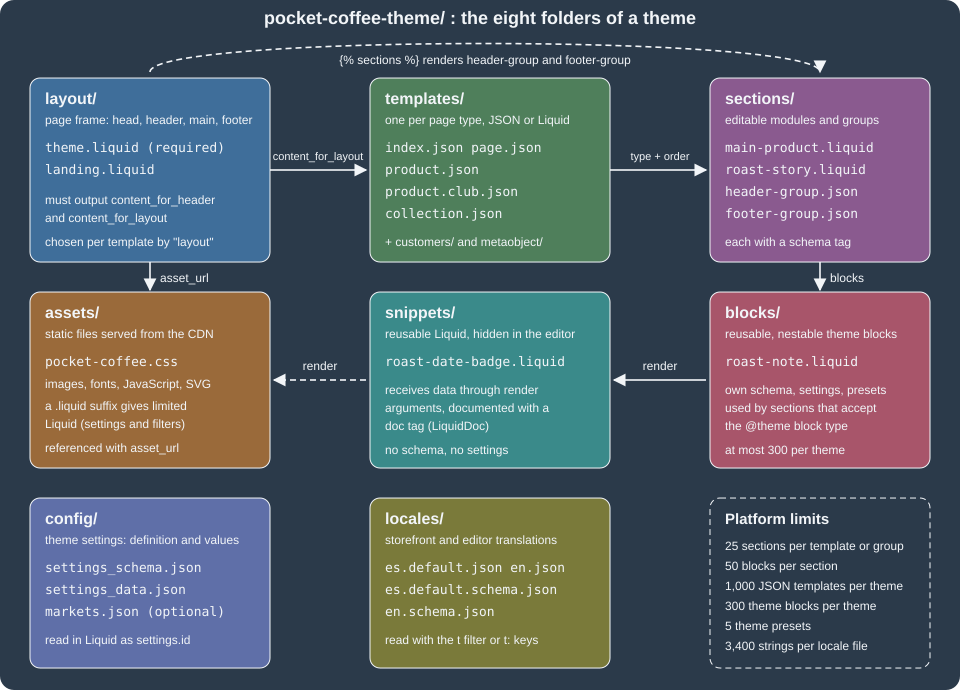

Theme Architecture
|
This content was generated with the assistance of AI and should be verified against the official documentation before being relied on in production. |
This page was written against Shopify CLI 5.0.0, Theme Check 3.31.0 and the reference themes Skeleton (the shopify theme init default), Dawn 16.0.0 and Horizon 4.3.0, and the official documentation was checked on 2026-10-27. Everything here applies to every Shopify plan that has an Online Store, because a theme is code that runs on the platform rather than a plan feature. The page explains how a theme is put together: which of the eight folders holds what, how a request becomes a page (layout, template, section group, section, block, snippet), and how settings and translations reach the Liquid code. It is the foundation for the following pages on the Liquid language, sections and theme blocks, the reference themes and the tooling.
The running example is the Pocket Coffee storefront. The page builds a small, complete theme for it (24 files, Spanish as the default language and English as the second language, a roast date badge driven by a product metafield) and prints every file. Shopify Theme Check 3.31.0, the validator bundled in the Shopify CLI, ran on that theme and reported no offenses; it also ran on deliberately broken copies, and the real messages are quoted below. Rendering the theme needs a store (shopify theme dev and shopify theme push require a Shopify login), and no account or login was used for this page, so the storefront output of the example was not executed: only the validation was.
The big picture
A theme controls the organisation, features and style of a merchant’s online store. It is a folder of files in a fixed structure: Liquid files that generate HTML, JSON files that hold data and configuration, and static assets. Online Store 2.0 is the architecture introduced in 2021 and used by every current reference theme. Its central idea is that pages are data: a JSON template lists which sections appear on a page and in what order, the merchant edits that list in the theme editor, and the Liquid code only describes how each section looks.
The components, from the outside in:
| Component | Role |
|---|---|
Layout |
The base of the theme: the HTML document with the head, the shared header and footer, and the place where the template output is inserted. Every page is rendered through a layout. |
Template |
Decides what a page type shows (home page, product, collection, cart, article, and so on). A JSON template is only a wrapper that lists sections; a Liquid template contains code. |
Section group |
A JSON container of sections that a layout renders in a fixed area, typically the header and the footer. Merchants can add, remove and reorder the sections in it. |
Section |
A reusable, customisable module with its own settings and blocks. Merchants add sections to JSON templates and section groups. |
Block |
A smaller reusable piece inside a section (or inside another block). Merchants add, remove and reorder blocks. |
Snippet |
A reusable piece of Liquid with no settings, invisible to merchants, rendered from layouts, templates, sections, blocks and other snippets. |
The figure shows the eight folders and how they refer to each other, using the files of the example theme built later on this page.

The same flow, as the platform assembles one page request:
Source: Shopify developer docs: Layouts
The Online Store 2.0 model replaced an older one, usually called the vintage architecture, that older books and tutorials still describe: Liquid templates that statically include sections with the section tag, sections that could only be rearranged on the home page, settings stored in a single large settings_data.json, and customer account templates inside the theme. Section groups and JSON templates are what let merchants edit every page, and the section tag survives only for statically rendered sections that merchants cannot remove or reorder. Where this page mentions the older approach it says so; new code should not use it.
The eight folders
A theme must use the following directory structure, and subdirectories other than the ones listed are not supported. Only a layout folder containing a theme.liquid file is required for the theme to be uploaded to Shopify.
.
├── assets
├── blocks
├── config
├── layout
├── locales
├── sections
├── snippets
└── templates
└── customers
└── metaobject| Folder | Contents | Notes |
|---|---|---|
|
Images, CSS, JavaScript, fonts and other static files. |
Referenced with the |
|
Theme blocks: Liquid files with their own schema that can be reused across sections and nested. |
At most 300 theme blocks per theme; every |
|
|
Defines the Theme settings area of the theme editor and stores its values. |
|
Layout files, the HTML shell of every page. |
|
|
Storefront translation files ( |
Exactly one default file of each kind. |
|
Section Liquid files and section group JSON files ( |
Both live in the same folder. |
|
Reusable Liquid files. |
Invisible in the theme editor. Documented with the LiquidDoc |
|
One file per page type, JSON or Liquid; |
No template is required, but a page type with no template cannot be rendered. |
The three reference themes follow the same layout. The counts below come from shopify theme init runs on 2026-10-27 (Skeleton from its default clone URL, Dawn 16.0.0 and Horizon 4.3.0 from their GitHub repositories) and count the files directly inside each folder.
| Folder | Skeleton | Dawn 16.0.0 | Horizon 4.3.0 |
|---|---|---|---|
|
4 |
190 |
125 |
|
2 |
none |
95 |
|
2 |
2 |
2 |
|
2 |
2 |
2 |
|
2 |
51 |
57 |
|
16 |
48 |
42 |
|
3 |
39 |
144 |
|
12 |
13 |
13 |
Source: GitHub: Shopify/dawn
Two facts stand out. Dawn predates theme blocks and has no blocks folder, while Horizon, the newer flagship theme, has 95 theme blocks and 144 snippets, so it is built mostly from nested blocks. Skeleton, the minimal starting point, has 39 files in total and Theme Check found no offenses in it; Dawn produced 9 warnings and Horizon 6 warnings with the same checker. A later page compares the three themes and the Theme Store requirements.
Source: GitHub: Shopify/skeleton-theme
The Pocket Coffee example theme
The example theme is intentionally small but touches every folder. It has a header group and a footer group, a home page and a product page built from sections, an alternate product template that uses a campaign layout, a collection and a generic page, a snippet with LiquidDoc, a theme block, theme settings, and two languages. Spanish is the default language of the shop, so the default locale files are es.default.json and es.default.schema.json; English adds en.json and en.schema.json.
pocket-coffee-theme/
├── assets/
│ └── pocket-coffee.css
├── blocks/
│ └── roast-note.liquid
├── config/
│ ├── settings_data.json
│ └── settings_schema.json
├── layout/
│ ├── landing.liquid
│ └── theme.liquid
├── locales/
│ ├── en.json
│ ├── en.schema.json
│ ├── es.default.json
│ └── es.default.schema.json
├── sections/
│ ├── footer-group.json
│ ├── footer.liquid
│ ├── header-group.json
│ ├── header.liquid
│ ├── main-collection.liquid
│ ├── main-page.liquid
│ ├── main-product.liquid
│ └── roast-story.liquid
├── snippets/
│ └── roast-date-badge.liquid
└── templates/
├── collection.json
├── index.json
├── page.json
├── product.club.json
└── product.jsonThe roast date is a product metafield with namespace and key custom.roast_date and type date; the theme reads it as product.metafields.custom.roast_date.value. Creating the metafield definition is an admin task covered with metafields and metaobjects later in this section. The date metafield type returns a date string that is formatted with the date filter.
Layouts
Layouts are the base of the theme, through which all templates are rendered. A layout is a Liquid file that puts the content repeated on many page types in one place: the head element, the header and footer, SEO metadata. Because layouts are the base of the document, they normally follow the structure of a standard HTML document.
Two Liquid objects are required in theme.liquid, and if either reference is missing the file cannot be saved or updated with the code editor or the Shopify CLI:
-
content_for_headermust be inside the HTMLheadtag. It dynamically loads all the scripts Shopify needs in the document head, for features such as hCaptcha and Shopify apps. A theme should not modify or parse it, because the behaviour of the Liquid changes if its content changes. -
content_for_layoutmust be betweenbodyand/body. It outputs the content of the template being rendered.
Shopify can begin sending the page to the browser when the layout reaches content_for_header, before the template’s sections render. Stylesheets, fonts and scripts that the first paint needs belong above it; the example puts the stylesheet tag above the header call for that reason.
The example theme.liquid carries everything a basic Pocket Coffee layout needs: language and canonical link, a style tag that turns theme settings into CSS custom properties and loads the chosen font, the stylesheet, the header and footer section groups, a skip link with a translated label, and a body class derived from the template name so that CSS can target one page type.
<!doctype html>
<html lang="{{ request.locale.iso_code }}">
<head>
<meta charset="utf-8">
<meta name="viewport" content="width=device-width, initial-scale=1">
<link rel="canonical" href="{{ canonical_url }}">
<title>{{ page_title }}{% unless request.page_type == 'index' %} | {{ shop.name }}{% endunless %}</title>
{% style %}
{{ settings.type_body_font | font_face: font_display: 'swap' }}
:root {
--pc-background: {{ settings.color_background }};
--pc-accent: {{ settings.color_accent }};
--pc-font-family: {{ settings.type_body_font.family }}, {{ settings.type_body_font.fallback_families }};
--pc-page-width: {{ settings.page_width }}px;
}
{% endstyle %}
{{ 'pocket-coffee.css' | asset_url | stylesheet_tag }}
{{ content_for_header }}
</head>
<body class="template-{{ template.name }}">
<a class="skip-link" href="#MainContent">{{ 'general.skip_to_content' | t }}</a>
{% sections 'header-group' %}
<main id="MainContent">
{{ content_for_layout }}
</main>
{% sections 'footer-group' %}
</body>
</html>Source: Shopify developer docs: Layouts
How the file works, line by line:
-
request.locale.iso_codesets the document language from the active storefront language. -
canonical_urlis the global object that holds the canonical URL of the page;page_titleholds the page title built by Shopify. -
The
styletag renders its content as an inline style element and may use thesettingsobject.font_faceturns afont_pickervalue into@font-facerules;font_display: 'swap'avoids invisible text while the font loads. -
{% sections 'header-group' %}renders the section group insections/header-group.jsonat that position. The argument is the group’s file name without extension. -
template-{{ template.name }}on the body supports template-specific CSS selectors: on the product page the class istemplate-product.
Layouts can access any global Liquid object and the two layout objects.
A theme can have more than one layout. The layout key of a JSON template, or the layout Liquid tag in a Liquid template, chooses which one is used. The example landing.liquid is a stripped layout for a coffee club campaign page: no header and footer groups, because a landing page should not distract from the call to action.
<!doctype html>
<html lang="{{ request.locale.iso_code }}">
<head>
<meta charset="utf-8">
<meta name="viewport" content="width=device-width, initial-scale=1">
<title>{{ page_title }}</title>
{{ 'pocket-coffee.css' | asset_url | stylesheet_tag }}
{{ content_for_header }}
</head>
<body class="layout-landing">
<main id="MainContent">
{{ content_for_layout }}
</main>
</body>
</html>There are two layout subtypes. General layouts apply to all non-checkout pages, and theme.liquid is the default and mandatory one. The checkout subtype, checkout.liquid, is legacy: it is unsupported for the Information, Shipping and Payment checkout steps (the official documentation gives no single shutdown day for those steps), and checkout.liquid and additional scripts were sunset for the Thank you and Order status pages on 2025-08-28. Script tags on those pages were sunset on 2025-08-28 for Plus stores and on 2026-08-26 for stores that are not on Plus. New work uses checkout extensions, covered in a later page. Skeleton, Dawn and Horizon all ship a second layout, layout/password.liquid, next to theme.liquid, which shows how more than one layout is used in practice.
A layout can be turned off for a template: the JSON template value "layout": false renders the template with no layout, but such templates cannot be customised in the theme editor.
Templates
Templates control what is rendered for each page type. Each page type has a template type, and to render a page the theme needs at least one template of that type: a product page needs product, a metaobject page needs metaobject/<type>. No template type is required for the theme to upload.
Template types
| Template | Renders |
|---|---|
|
The page shown for an invalid store URL. |
|
An article, with its optional comments. Used for blog posts. |
|
A blog and the list of its articles. |
|
The |
|
A collection and its products. |
|
The gift card page shown after a gift card purchase. Must be Liquid. |
|
The home page, at the root URL. |
|
The page at |
|
Shop pages such as About us and Contact us. |
|
The |
|
A product, with media, content and the add to cart form. |
|
The |
|
The |
|
Metaobject web pages, one default template per metaobject definition, with optional alternates. Requires the web page capability on the definition. |
|
The agent discovery files at |
The gift_card, robots.txt, agents.md, llms.txt and llms-full.txt templates cannot be JSON templates. The agent discovery templates were announced in the Shopify changelog on 2026-05-28.
The legacy customer account templates (customers/account, customers/activate_account, customers/login, customers/order, customers/register, customers/reset_password and customers/addresses) are no longer needed. Customer accounts now run independently of themes, and publishing a theme without those templates upgrades the merchant to the current customer accounts experience. Shopify announced on 2026-02-26 that legacy customer accounts are deprecated, with a final sunset date still to be announced; instead of the account templates a theme adds the shopify-account component to the header, and since 2026-07-30 that component is a Theme Store requirement.
JSON or Liquid
A template is a JSON file or a Liquid file, never both: a theme that has product.liquid cannot also have product.json. If you want sections in a template you must use a JSON template. JSON templates give merchants the freedom to add, remove and reorder sections, including app sections, and they store their own data, which keeps settings_data.json small and the theme editor fast. Liquid templates hold HTML and Liquid directly, cannot contain merchant-editable sections, and remain necessary for the template types that must be Liquid. A theme can contain up to 1,000 JSON templates across all template types.
JSON template schema
A JSON template accepts only a fixed schema. The root object has these attributes:
| Attribute | Type | Required | Description |
|---|---|---|---|
|
String or |
No |
The file name, without extension, of the layout to use: |
|
String |
No |
An HTML element placed around all the sections of the template: |
|
Object |
Yes |
Section IDs as keys and section data as values. At least one section; duplicate IDs are not allowed. |
|
Array |
Yes |
The section IDs in render order. Every ID must exist in |
A JSON template can render up to 25 sections, each with up to 50 blocks. The sections are rendered in the order of the order array with no markup between them. The section data has this format:
| Key | Type | Required | Description |
|---|---|---|---|
Section ID |
String |
- |
Unique within the template, alphanumeric only. Section data cannot be shared across templates. |
|
String |
Yes |
The file name of the section to render, without extension. It must exist in the theme unless it is an app section. |
|
Boolean |
No |
When |
|
Object |
No |
Setting IDs and values, as defined in the section schema. |
|
Object |
No |
Block IDs as keys. Each block has a |
|
Array |
No |
The block IDs in render order; every ID must exist in |
Section files must define presets in their schema to be added through the theme editor. A section without presets can still appear in a JSON template if you add it in code, and the merchant then cannot remove it. The custom_css value that merchants add to a section instance is platform-controlled data stored in the template; themes should not write it, but use CSS assets and stylesheet tags.
The home page template of the example lists one section with one origin block. Block data uses the same shape as sections: IDs as keys, a type that matches a block type in the section schema, and block_order.
{
"sections": {
"story": {
"type": "roast-story",
"settings": {
"heading": "Fresh-roasted in Madrid",
"show_roast_dates": true
},
"blocks": {
"origin": {
"type": "origin",
"settings": {
"country": "Ethiopia",
"note": "Yirgacheffe, washed, floral and citrus"
}
}
},
"block_order": ["origin"]
}
},
"order": ["story"]
}The product template lists the main product section and a roast story section. Because main-product.liquid limits itself to product pages and uses the product object, the template needs nothing else: the platform supplies the product object when the page type is product.
{
"sections": {
"main": {
"type": "main-product",
"settings": {
"show_roast_badge": true
}
},
"story": {
"type": "roast-story",
"settings": {
"heading": "About this roast"
}
}
},
"order": ["main", "story"]
}The remaining templates of the example follow the same pattern.
{
"sections": {
"main": {
"type": "main-collection",
"settings": {
"products_per_page": 12
}
}
},
"order": ["main"]
}{
"sections": {
"main": {
"type": "main-page"
}
},
"order": ["main"]
}Files that merchants and the platform edit (templates/*.json, sections/*.json section groups, config/settings_data.json, locales/*.json) are rewritten by the theme editor, and Shopify adds a comment header to them that warns the file may be overwritten. Hand-written files such as the ones above do not need the header (Skeleton’s generated files carry it), but expect Shopify to add one after the first edit in the editor, and expect comments and trailing commas that you add to these files not to persist.
Alternate and contextual templates
An alternate template has the name structure template-name.template-suffix.file-type, for example product.club.json. It is assigned to a resource in the Shopify admin, previewed in the theme editor, or rendered on the storefront with the view URL parameter: /products/ethiopia-yirgacheffe?view=club. You cannot replace the default template with an alternate; edit the default instead. The template object tells the code which template is being used.
The Pocket Coffee club template is an alternate product template: it uses the landing layout and wraps its sections in a div with an id and class.
{
"layout": "landing",
"wrapper": "div#club-landing.club-landing",
"sections": {
"main": {
"type": "main-product",
"settings": {
"show_roast_badge": true
}
}
},
"order": ["main"]
}When a merchant adapts a template for a buyer context (a market or B2B), Shopify creates a contextual template file named index.context.<context-string>.json. It contains a context object with either "market": "market-handle" or "b2b": true, a parent that names the file it overrides, and only the overridden section data. Section groups follow the same convention (header-group.context.ca.json). For a market with the handle eu, Pocket Coffee would get index.context.eu.json the first time a merchant customises the home page for that market.
{
"context": {
"market": "ca"
},
"parent": "index.json",
"sections": {
"image_banner": {
"settings": {
"show_text_box": true
}
}
}
}The inheritance between markets is recorded in config/markets.json, described under config files below.
Section groups
A section group is a JSON file in sections/ that stores a list of sections and app blocks to be rendered, with their settings. The layout renders it with the sections tag, so merchants can add, remove and reorder sections in areas the layout controls, normally the header and the footer. Groups use the same section and app block data as templates and follow the same guidelines. The sections of a group are rendered in order, with no markup between them, up to 25 sections and 50 blocks per section.
| Attribute | Type | Required | Description |
|---|---|---|---|
|
String |
Yes |
|
|
String |
Yes |
The group name, 50 characters at most. It can be a |
|
Object |
Yes |
Section IDs and section data, the same format as templates. May be empty. |
|
Array |
Yes |
The section IDs in render order. May be empty. |
{
"type": "header",
"name": "t:sections.header_group.name",
"sections": {
"header": {
"type": "header",
"settings": {}
}
},
"order": ["header"]
}{
"type": "footer",
"name": "t:sections.footer_group.name",
"sections": {
"footer": {
"type": "footer",
"settings": {}
}
},
"order": ["footer"]
}In most themes section groups are only for the header and the footer. If you create another group, name it after its purpose, for example sidebar-group.json with type custom.sidebar. Each group has its own data: you cannot share section data across groups, and a section ID only has to be unique inside its group. The type of a group is also what a section’s enabled_on.groups and disabled_on.groups refer to.
The older alternative is statically rendering a section with the section tag. A statically rendered section has exactly one instance in the whole theme, even if the tag appears in several files, and merchants cannot remove or reorder it, so Shopify recommends section groups instead and documents a migration path. Avoid using both in one layout; if you must, mark the static sections in their names.
Sections
Sections are Liquid files in sections/ that create reusable, customisable modules. A section can have blocks and settings, and appears in a JSON template, in a section group or, statically, in a Liquid file. By default a section is available to any template and group; the section schema can restrict that.
A section file has three kinds of content: the main content (HTML and Liquid), optional assets bundled with the javascript and stylesheet tags, and the mandatory schema tag with the JSON that defines the section. Sections have the global Liquid objects, tags and filters plus the section object (its settings, blocks and ID) and the block object inside a block loop. Variables created outside a section are not visible inside it, and the section and block objects are not visible outside it, except inside a snippet rendered by the section.
Sections can be rendered in four ways: by listing them in a JSON template, by listing them in a section group, statically with the section tag, and through the Section Rendering API, which returns the HTML of a section for JavaScript to swap into the page.
Section schema
The schema tag is parsed, not rendered: it must contain valid JSON, appear once per file, and cannot be nested in another Liquid tag. Two schema tags or a nested one produce a syntax error when you edit the theme.
| Attribute | Description |
|---|---|
|
The section title in the theme editor. Use a |
|
The wrapper element of the section: |
|
An extra class added to the wrapper, after |
|
How many times the section can be added to a template or group. Only 1 or 2 are accepted. |
|
Section settings (see the settings section below). Setting IDs must be unique within the section. |
|
The section blocks: |
|
A lower limit than the maximum of 50 blocks per section. Static blocks do not count. |
|
Predefined configurations merchants choose in the Add section picker: |
|
The configuration of a section that is statically rendered, with the same attributes as a preset. Use it only for sections reused across themes or shops. |
|
Section-owned translations, so that a section distributed to several themes keeps its own strings. They appear under the Sections tab of the language editor and are read with keys of the form |
|
Restricts the section to listed templates ( |
|
The inverse of |
A section cannot define local blocks and accept theme blocks at the same time; that choice and the rendering of theme blocks with content_for belong to the page on sections and theme blocks. The example uses local (section) blocks: they are limited to the section, support only one level of hierarchy, and cannot be mixed with theme blocks in the same section.
A complete section: roast story
The roast story section explains where the coffee comes from. It shows a translatable heading, one block type for the origin of each coffee and one for a tasting note, and, when the setting is on and the page has a product, the roast date badge snippet. Study the points where it touches the architecture: section.shopify_attributes and block.shopify_attributes let the theme editor find the elements; section.blocks is iterated with a case on block.type; the block ID is never compared with a literal; and the locales object supplies a fallback heading in both languages.
<section class="roast-story" {{ section.shopify_attributes }}>
<h2>{{ section.settings.heading | default: 'sections.roast-story.fallback_heading' | t }}</h2>
{% for block in section.blocks %}
{% case block.type %}
{% when 'origin' %}
<div class="roast-story__origin" {{ block.shopify_attributes }}>
<h3>{{ block.settings.country }}</h3>
<p>{{ block.settings.note }}</p>
</div>
{% when 'tasting_note' %}
<p class="roast-story__note" {{ block.shopify_attributes }}>{{ block.settings.text }}</p>
{% endcase %}
{% endfor %}
{% if section.settings.show_roast_dates and product != blank %}
{% render 'roast-date-badge', product: product %}
{% endif %}
</section>
{% schema %}
{
"name": "t:sections.roast_story.name",
"tag": "section",
"class": "roast-story-section",
"limit": 2,
"settings": [
{
"type": "text",
"id": "heading",
"label": "t:sections.roast_story.settings.heading.label",
"default": "Our roast"
},
{
"type": "checkbox",
"id": "show_roast_dates",
"label": "t:sections.roast_story.settings.show_roast_dates.label",
"default": false
}
],
"max_blocks": 6,
"blocks": [
{
"type": "origin",
"name": "t:sections.roast_story.blocks.origin.name",
"limit": 3,
"settings": [
{
"type": "text",
"id": "country",
"label": "t:sections.roast_story.blocks.origin.settings.country.label",
"default": "Ethiopia"
},
{
"type": "textarea",
"id": "note",
"label": "t:sections.roast_story.blocks.origin.settings.note.label"
}
]
},
{
"type": "tasting_note",
"name": "t:sections.roast_story.blocks.tasting_note.name",
"settings": [
{
"type": "text",
"id": "text",
"label": "t:sections.roast_story.blocks.tasting_note.settings.text.label",
"default": "Jasmine, bergamot, honey"
}
]
}
],
"presets": [
{
"name": "t:sections.roast_story.presets.default.name",
"category": "t:sections.roast_story.presets.default.category",
"settings": {
"heading": "Our roast"
},
"blocks": [
{ "type": "origin" },
{ "type": "tasting_note" }
]
}
],
"enabled_on": {
"templates": ["index", "product", "page"],
"groups": ["footer"]
},
"locales": {
"en": {
"fallback_heading": "Our roast"
},
"es": {
"fallback_heading": "Nuestro tueste"
}
}
}
{% endschema %}Notes on the schema above:
-
t:sections.roast_story.nameand the othert:values are keys of the schema locale files (see the locales section below). Theme Check verifies that each key exists in the default schema locale file. -
limit: 2allows at most two roast story sections per template or group,max_blocks: 6allows six blocks, and the origin block has its ownlimit: 3. -
The preset has a
category, so the section appears under a collapsible Storytelling group in the picker, and the preset pre-fills one origin and one tasting note. -
enabled_onallows the section on the home, product and page templates and in the footer group. A section placed on a template that is not listed, for example the cart, is not offered in the Add section picker. -
The
localesobject holds the fallback heading in English and Spanish. The key is read assections.roast-story.fallback_heading, with the section file name (not the schema name) as the section name. -
The theme editor uses the first of the
heading,titleandtextsetting IDs of a block as its title in the sidebar. The tasting note block usestext, so the editor shows the note’s text as the block title.
The section above renders blocks by block.type. When you iterate over blocks do not rely on the literal value of a block ID, because it is generated dynamically and may change.
Theme editor integration
The theme editor integrates with sections: when a merchant edits a section or block, its HTML is re-rendered in place, without a page reload, so JavaScript that ran at load does not run again. A section must stay visible while selected (a slideshow scrolls into view, shows the selected slide and pauses), and the editor emits JavaScript events and Liquid and JavaScript flags for detecting the editor. Those events are part of the next page on sections and blocks; the architecture rule is that every section and block root element carries shopify_attributes so the editor can address it.
The main sections
By convention a template’s primary content is a section named after the page type with the prefix main- in Dawn (main-product.liquid) and without the prefix in Skeleton (product.liquid). The example follows Dawn. The product section holds the product form: the form tag with the product type is how a customer adds a variant to the cart, and the form needs a variant selector, a quantity input named quantity and, recommended, accelerated checkout buttons through the payment_button filter.
<section class="product" data-product-id="{{ product.id }}">
<div class="product__media">
{% for image in product.images %}
{{ image | image_url: width: 800 | image_tag: loading: 'lazy', widths: '400, 800' }}
{% endfor %}
</div>
<div class="product__info" {{ section.shopify_attributes }}>
<h1>{{ product.title }}</h1>
<p>{{ product.selected_or_first_available_variant.price | money }}</p>
{% if section.settings.show_roast_badge %}
{% render 'roast-date-badge', product: product %}
{% endif %}
{% form 'product', product %}
<label for="variant-{{ section.id }}">{{ 'products.product.variant' | t }}</label>
<select id="variant-{{ section.id }}" name="id">
{% for variant in product.variants %}
<option value="{{ variant.id }}" {% if variant.available == false %}disabled{% endif %}>
{{ variant.title }} - {{ variant.price | money }}
</option>
{% endfor %}
</select>
<label for="quantity-{{ section.id }}">{{ 'products.product.quantity' | t }}</label>
<input id="quantity-{{ section.id }}" type="number" name="quantity" min="1" value="1">
<button type="submit">{{ 'products.product.add_to_cart' | t }}</button>
{{ form | payment_button }}
{% endform %}
</div>
</section>
{% schema %}
{
"name": "t:sections.main_product.name",
"settings": [
{
"type": "checkbox",
"id": "show_roast_badge",
"label": "t:sections.main_product.settings.show_roast_badge.label",
"default": true
}
],
"enabled_on": {
"templates": ["product"]
}
}
{% endschema %}enabled_on with templates: ["product"] makes this a main section that the editor does not offer on other templates. The image uses image_url and image_tag, so the img tag has width and height and a srcset, which Theme Check’s ImgWidthAndHeight check requires.
The collection section paginates the collection and shows the roast date badge for each product:
<section class="collection" {{ section.shopify_attributes }}>
<h1>{{ collection.title }}</h1>
{% paginate collection.products by section.settings.products_per_page %}
<ul class="collection__grid">
{% for product in collection.products %}
<li>
<a href="{{ product.url }}">{{ product.title }}</a>
{% render 'roast-date-badge', product: product %}
</li>
{% endfor %}
</ul>
{{ paginate | default_pagination }}
{% endpaginate %}
</section>
{% schema %}
{
"name": "t:sections.main_collection.name",
"settings": [
{
"type": "range",
"id": "products_per_page",
"min": 4,
"max": 24,
"step": 4,
"label": "t:sections.main_collection.settings.products_per_page.label",
"default": 12
}
],
"enabled_on": {
"templates": ["collection"]
}
}
{% endschema %}The header section reads a menu setting of type link_list and the cart count; the footer shows a translated copyright line; the page section prints the page title and content.
<header class="site-header">
<a class="site-header__title" href="{{ routes.root_url }}">{{ shop.name }}</a>
<nav aria-label="{{ 'general.main_navigation' | t }}">
{% for link in section.settings.menu.links %}
<a href="{{ link.url }}">{{ link.title }}</a>
{% endfor %}
</nav>
<a href="{{ routes.cart_url }}">
{{ 'general.cart' | t }}
{% if cart.item_count > 0 %}
<span>({{ cart.item_count }})</span>
{% endif %}
</a>
</header>
{% schema %}
{
"name": "t:sections.header.name",
"settings": [
{
"type": "link_list",
"id": "menu",
"label": "t:sections.header.settings.menu.label",
"default": "main-menu"
}
],
"disabled_on": {
"templates": ["password"]
}
}
{% endschema %}Source: Shopify developer docs: Sections
{%- assign current_year = 'now' | date: '%Y' -%}
<footer class="site-footer">
<p>{{ 'general.footer_copyright' | t: shop: shop.name, year: current_year }}</p>
</footer>
{% schema %}
{
"name": "t:sections.footer.name",
"settings": []
}
{% endschema %}<article class="page" {{ section.shopify_attributes }}>
<h1>{{ page.title }}</h1>
<div class="rte">{{ page.content }}</div>
</article>
{% schema %}
{
"name": "t:sections.main_page.name",
"settings": [],
"enabled_on": {
"templates": ["page"]
}
}
{% endschema %}Source: Shopify developer docs: Sections
Blocks
Blocks break a section into smaller reusable pieces that merchants add, remove and reorder. There are three kinds:
-
Theme blocks are Liquid files in
blocks/. They are reusable across sections, can be nested inside other theme blocks, can be recommended in the block picker through the@themeentry, and can be static blocks that stay in place and can be hidden but not deleted. -
Section blocks are defined inside one section’s schema. They work only in that section, cannot be nested, and cannot currently be mixed with theme blocks in the same section.
-
App blocks are provided by installed apps (theme app extensions) and are accepted by a section or block that lists
@appin itsblocks.
A theme can contain at most 300 theme blocks. Compared with snippets, theme blocks show settings in the theme editor and let merchants customise each instance; they can read their parent section and the global objects; but they cannot receive variables from their parent code. Snippets are the opposite: no editor presence, but they take variables as arguments. Real themes combine both: blocks for structure and settings, snippets for the markup shared between blocks.
Source: Shopify developer docs: Blocks
The example theme has one theme block, a short note about the roast. Its file is complete: a LiquidDoc header that documents how to render it statically, the markup with block.shopify_attributes, and a schema with a preset (without a preset a theme block is not shown in the block picker).
{% doc %}
Renders a short note about the roast. Can be nested in any section that accepts theme blocks.
@example
{% content_for 'block', type: 'roast-note', id: 'note' %}
{% enddoc %}
<p class="roast-note" {{ block.shopify_attributes }}>{{ block.settings.text }}</p>
{% schema %}
{
"name": "t:blocks.roast_note.name",
"settings": [
{
"type": "text",
"id": "text",
"label": "t:blocks.roast_note.settings.text.label",
"default": "Roasted to order"
}
],
"presets": [
{ "name": "t:blocks.roast_note.name" }
]
}
{% endschema %}Placement rules, nesting, static blocks, presets and the content_for tag are covered in the page on sections and theme blocks.
The design guidance for all blocks is to group settings into blocks to declutter the editor sidebar, to avoid blocks that are too granular (an author, date and comment count should be settings or one block, not three blocks), not to depend on a specific block order or type for the section layout, and to offer app blocks only where inserting unknown content cannot break the layout.
Snippets
Snippets are reusable pieces of Liquid that keep a theme consistent and avoid duplication. They are rendered anywhere in the theme with the render tag, which takes the snippet’s file name and named parameters, and they are invisible to merchants in the theme editor. Inside a snippet you cannot read variables created outside it, but you can read global objects, such as product, collection and section, and any parameters you pass. Variables created in the snippet stay local to it.
{% render 'product-card',
product: product,
show_price: true,
max_description_length: 120
%}Source: Shopify developer docs: Snippets
The render tag also takes for to render a snippet for every item of an array (with an optional as alias and the forloop object inside the snippet). The older include tag shares variables with its caller and is deprecated: Theme Check reports DeprecatedTag, and inside a snippet rendered with render the include tag is not allowed. Do not use include.
LiquidDoc, the doc tag, documents a snippet’s parameters (@param {type} name - description, optional parameters in brackets) and examples. Editors that use the Shopify Liquid language server then provide parameter checks and completion, and Theme Check validates calls against the documented parameters (MissingRenderSnippetArguments, UnrecognizedRenderSnippetArguments and related checks).
The roast date badge snippet is the Pocket Coffee roast-date feature. It documents its parameters, reads the metafield, prints nothing when the roast date is missing, and bundles its CSS with a stylesheet tag, which is valid in sections, blocks and snippets.
{% doc %}
Renders the roast date badge for a product.
@param {product} product - The product whose roast date is shown
@param {string} [class] - Optional CSS class added to the badge
@example
{% render 'roast-date-badge', product: product %}
{% enddoc %}
{%- assign roast_date = product.metafields.custom.roast_date.value -%}
{%- if roast_date != blank -%}
<p class="roast-date-badge {{ class }}">
{{ 'products.roast_date.label' | t }}
<time datetime="{{ roast_date | date: '%Y-%m-%d' }}">{{ roast_date | date: format: 'abbreviated_date' }}</time>
</p>
{%- endif -%}
{% stylesheet %}
.roast-date-badge {
display: inline-block;
padding: 0.25rem 0.75rem;
border-radius: 1rem;
background: var(--pc-accent);
color: #fff;
}
{% endstylesheet %}Because the snippet reads product as an argument, a caller that forgets it gets a warning from Theme Check; the broken theme below demonstrates this.
Settings and config files
The config folder defines the Theme settings area of the theme editor and stores its values. Up to three files are involved.
| File | Purpose | Required |
|---|---|---|
|
Controls the organisation and content of the Theme settings area. |
Yes |
|
Stores the values the merchant selected, based on the schema. |
Yes |
|
Sets the source of inheritance of market-specific theme customisations. |
No |
Source: Shopify developer docs: Config
settings_schema.json
The file is an array of objects that represent setting categories. Each object needs a name and an array of settings. One object has "name": "theme_info" and carries the theme metadata that appears in the Theme actions menu of the editor. All its attributes are required, with one exception: provide theme_support_email or theme_support_url, not both.
theme_info attribute |
Description | Required |
|---|---|---|
|
Must be |
Yes |
|
The theme name. |
Yes |
|
The theme author. |
Yes |
|
The version number. |
Yes |
|
Where merchants find documentation. |
Yes |
|
A support email address. |
One of the two |
|
A support URL. |
One of the two |
The example defines two categories: colors and typography with the page width. Their labels are t: keys that resolve in the schema locale files.
[
{
"name": "theme_info",
"theme_name": "Pocket Coffee",
"theme_version": "0.1.0",
"theme_author": "Pocket Coffee",
"theme_documentation_url": "https://example.com/docs/pocket-coffee-theme",
"theme_support_email": "support@example.com"
},
{
"name": "t:settings_schema.colors.name",
"settings": [
{
"type": "header",
"content": "t:settings_schema.colors.settings.header.content"
},
{
"type": "color",
"id": "color_background",
"label": "t:settings_schema.colors.settings.color_background.label",
"default": "#FBF7F2"
},
{
"type": "color",
"id": "color_accent",
"label": "t:settings_schema.colors.settings.color_accent.label",
"default": "#A4552A"
}
]
},
{
"name": "t:settings_schema.typography.name",
"settings": [
{
"type": "font_picker",
"id": "type_body_font",
"label": "t:settings_schema.typography.settings.type_body_font.label",
"default": "assistant_n4"
},
{
"type": "range",
"id": "page_width",
"min": 960,
"max": 1600,
"step": 40,
"unit": "px",
"label": "t:settings_schema.typography.settings.page_width.label",
"default": 1200
}
]
}
]In Liquid, theme settings are read from the global settings object by setting ID (settings.color_accent), section settings from section.settings, block settings from block.settings. The global settings object is also available in Liquid assets (.css.liquid). Always check the format of a value before you use it: a setting without an automatic default can be an empty string, and a resource setting such as page or product can be empty because nothing was selected, the resource was deleted or hidden. Use blank for the check.
{% unless settings.message == blank %}
{{ settings.message }}
{% endunless %}Source: Shopify developer docs: Settings
Setting types
Settings come in two categories. Input settings hold a value and are configured by the merchant; sidebar settings cannot hold a value and are informational.
Every input setting has type, id and label (all required), plus optional default and info. The basic types are checkbox, number, radio, range, select, text and textarea. The specialised types are:
-
Resources:
article,article_list,blog,collection,collection_list,metaobject,metaobject_list,page,product,product_list. A resource setting returns the resource object, or an empty value when none is selected. Older themes received only the handle and had to look the resource up with theall_productsobject, a pattern still found in older code. -
Styling:
color,color_background,color_palette,color_scheme,color_scheme_group,font_picker,text_alignment. -
Content:
html,image_picker,inline_richtext,link_list,liquid,richtext,url,video,video_url.
Frequently used attributes: range needs min and max and accepts step (default 1) and unit; a value outside the range reverts to the nearest limit and a value that does not respect the step rounds to the closest step. select needs options, an array of value and label objects, and each option may carry a group. radio needs options. text, textarea and number accept a placeholder, shown only for settings in settings_schema.json. color_palette is a newer setting (changelog of 2026-06-17): it defines one named palette per theme, with 2 to 20 hex colours, in settings_schema.json, and color and color_background settings can reference palette entries as defaults; colour schemes keep working and neither is required for Theme Store submission.
The sidebar settings are header, which prints a heading (with an optional info), and paragraph, which prints text; both need a content attribute. A conditional setting is shown only when a boolean expression is true, set with visible_if, for example "visible_if": "{{ block.settings.layout_style == 'flex' }}". Basic input settings, all sidebar settings and a list of specialised settings support it; a condition can test whether a setting with a data source has a value but not what the data source resolves to.
For settings in JSON templates, merchants can connect a metafield through a dynamic source, so a section shows product-specific content without code changes.
settings_data.json
The file stores the values chosen in the editor. The example theme starts with the minimal valid file; Shopify rewrites it with the values and the generated comment header when a merchant first saves.
{
"current": {}
}The file has these parent objects:
| Object | Description | Required |
|---|---|---|
|
The setting values currently saved in the theme editor. |
Yes |
|
One object per theme preset, in the same format as |
Yes in the documented schema |
|
Values of platform-controlled settings, such as the merchant’s custom CSS at theme level. |
Added by Shopify when a merchant uses one |
Theme presets let one code base ship up to five pre-configured designs (layout options, palettes, typography). Selecting a preset updates current, but only the presentational settings are overwritten: checkbox, color, color_background, color_palette, color_scheme, color_scheme_group, font_picker, number, radio, range and select. The file cannot exceed 1.5 MB and a theme cannot contain more than five presets. The Skeleton file shown by shopify theme init contains only { "current": {} } under the generated comment header, which Theme Check accepts, so the example follows it.
markets.json
markets.json appears in config/ only when the theme has market-specific customisations. It lists each customised market with its parent. Shopify markets can inherit from several parents, but theme customisations allow one parent per market, so the file records that single source. @default is the store default; any other value is the handle of a parent market.
{
"markets": {
"europe": { "parent": "@default" },
"north-america": { "parent": "@default" },
"canada": { "parent": "north-america" },
"united-states": { "parent": "north-america" }
}
}For Pocket Coffee the EU market would typically have @default as its parent, because the shop is Spanish first, and a USD market would inherit from the same default. Do not compute a market’s price in theme code from the base price: read the market’s contextual prices and avoid hardcoded paths such as /cart (use routes.cart_url), because visitors in another market or language are otherwise redirected to the defaults.
Source: Shopify developer docs: Markets
JSON with comments
Theme files support comments and trailing commas in JSON: you can comment config/settings_schema.json and the schema tags. Files that merchants and Shopify typically edit do not persist comments or trailing commas: templates/*.json, section groups (sections/*.json), config/settings_data.json and locales/*.json. If you read theme files through the Assets API you need a JSON parser that accepts comments and trailing commas. Theme Check 3.31.0 accepts both; adding a block comment and a trailing comma to the example settings_schema.json still passed with no offenses.
Locales
Locale files are JSON files that hold the translations of the theme. There are two kinds: storefront locale files (.json) for storefront text, which merchants edit in the Shopify language editor, and schema locale files (.schema.json) for the labels in the theme editor.
Names follow IETF language tags: a lowercase language code, optionally with an uppercase region code, for example en-GB.json, es-ES.json, fr-CA.json, or fi.json when the language is not region specific. Each type needs exactly one default file named *.default.json and *.default.schema.json, where the prefix is the theme’s default language; most themes use en.default.json. The Pocket Coffee shop is Spanish first, so its default files are es.default.json and es.default.schema.json. Locale files are organised in three levels: category, group and description, for example products.roast_date.label. A locale file can hold at most 3,400 translations and a value cannot exceed 1,000 characters.
{
"general": {
"skip_to_content": "Saltar al contenido",
"main_navigation": "Navegación principal",
"cart": "Carrito",
"footer_copyright": "© {{ year }} {{ shop }}"
},
"products": {
"roast_date": {
"label": "Tostado el"
},
"product": {
"variant": "Variante",
"quantity": "Cantidad",
"add_to_cart": "Añadir al carrito"
}
}
}{
"general": {
"skip_to_content": "Skip to content",
"main_navigation": "Main navigation",
"cart": "Cart",
"footer_copyright": "© {{ year }} {{ shop }}"
},
"products": {
"roast_date": {
"label": "Roasted on"
},
"product": {
"variant": "Variant",
"quantity": "Quantity",
"add_to_cart": "Add to cart"
}
}
}Storefront translations are read with the t filter on a key wrapped in single quotes: {{ 'products.roast_date.label' | t }}. The filter has these features:
-
Interpolation: a value can contain variables in double braces, filled from named arguments. The footer of the example uses
"footer_copyright": "© {{ year }} {{ shop }}"and passesyearandshopas arguments. -
Escaping: translated content is escaped by default. A key ending in
_htmlis output unescaped, which is needed for HTML tags and for translations used in JavaScript. -
Pluralisation: pass a
countargument and give the keyszero,one,two,few,manyandotheras the language requires, following the Unicode CLDR plural rules. -
Dates: the
dateandtime_tagfilters have locale-aware named formats; custom formats go in adate_formatsobject with Rubystrftimeparameters, and a custom format must exist in every locale file or the active language renders a Liquid error. -
Checkout and system messages: Shopify provides these outside the theme’s locale files; to replace one you add an override to the storefront locale file.
Schema locale files translate the label, info, group, placeholder, unit, content, preset name and category, block name, and some default values of settings. Keys are referenced from schema with the prefix t: and the same category, group and description: "name": "t:sections.product.name". The Spanish default schema file of the example is below; en.schema.json has the same keys with English text.
{
"sections": {
"header_group": {
"name": "Grupo de cabecera"
},
"footer_group": {
"name": "Grupo de pie de página"
},
"header": {
"name": "Cabecera",
"settings": {
"menu": {
"label": "Menú"
}
}
},
"footer": {
"name": "Pie de página"
},
"main_product": {
"name": "Página de producto",
"settings": {
"show_roast_badge": {
"label": "Mostrar la fecha de tueste"
}
}
},
"main_collection": {
"name": "Página de colección",
"settings": {
"products_per_page": {
"label": "Productos por página"
}
}
},
"main_page": {
"name": "Página"
},
"roast_story": {
"name": "Historia del tueste",
"settings": {
"heading": {
"label": "Encabezado"
},
"show_roast_dates": {
"label": "Mostrar la fecha de tueste"
}
},
"blocks": {
"origin": {
"name": "Origen",
"settings": {
"country": {
"label": "País"
},
"note": {
"label": "Nota"
}
}
},
"tasting_note": {
"name": "Nota de cata",
"settings": {
"text": {
"label": "Texto"
}
}
}
},
"presets": {
"default": {
"name": "Historia del tueste",
"category": "Narrativa"
}
}
}
},
"blocks": {
"roast_note": {
"name": "Nota de tueste",
"settings": {
"text": {
"label": "Texto"
}
}
}
},
"settings_schema": {
"colors": {
"name": "Colores",
"settings": {
"header": {
"content": "Colores de marca"
},
"color_background": {
"label": "Fondo"
},
"color_accent": {
"label": "Acento"
}
}
},
"typography": {
"name": "Tipografía y diseño",
"settings": {
"type_body_font": {
"label": "Fuente del texto"
},
"page_width": {
"label": "Ancho de página"
}
}
}
}
}A section can also carry its own locales object in its schema. Those translations live in the section file rather than the locales folder, which suits sections distributed to many themes; they are read through the t filter as sections.[section-name].[key], and edits made by a merchant are saved in the theme’s locale file, not in the schema.
Assets and root files
Everything in assets/ is served from Shopify’s CDN. The asset_url filter returns the URL of an asset, stylesheet_tag turns a URL into a link element, and image_url plus image_tag handle theme and product images. Sections, blocks and snippets can bundle their own CSS and JavaScript with the stylesheet and javascript tags, so small component-specific code does not need a file in assets. The pocket-coffee.css file of the example is short: custom properties that the layout overrides from theme settings, a body rule and a visually hidden skip link.
:root {
--pc-background: #fbf7f2;
--pc-foreground: #2b1d14;
--pc-accent: #a4552a;
}
body {
margin: 0;
background: var(--pc-background);
color: var(--pc-foreground);
font-family: var(--pc-font-family, system-ui, sans-serif);
}
.skip-link:not(:focus) {
position: absolute;
left: -999px;
}Two files at the root of a theme are not part of the eight folders. .shopifyignore lists files excluded from Shopify CLI operations such as push, pull and dev; it supports exact paths, wildcard patterns and regular expressions delimited by slashes, and Skeleton ships one with comment examples. .theme-check.yml configures Theme Check; shopify theme check --init writes one that extends theme-check:recommended and ignores node_modules. The GitHub integration, described in the tooling page, syncs only branches that match the standard folder layout and ignores other folders.
Validating the theme with Theme Check
Theme Check is the static analyser for themes. It ships inside Shopify CLI (shopify theme check, here version 3.31.0) and as the @shopify/theme-check-node package, and it knows every Shopify Liquid tag, filter and object, the schema of sections and blocks, and the JSON structure of templates, section groups and locale files. The first run downloads the Liquid reference data (155 filters, 33 tags and 142 objects at the time of checking) and caches it, so later runs work offline; the very first run needs network access.
cd pocket-coffee-theme
shopify theme checkSource: Shopify CLI docs: theme check
On the example theme the result was:
Theme Check Summary.
23 files inspected with no offenses found.Theme Check counted 23 inspected files out of the 24 in the theme. Useful flags: -o json for machine-readable output with valid, issues[] (file path, check name, severity, rows and message) and the error count; --fail-level to choose the severity that gives a non-zero exit code (the default is error); -C for a config file; -a to auto-correct offenses that can be corrected; --init to write a .theme-check.yml; --print to print the resolved configuration; --list to list every enabled check (83 in this version) with its description and documentation link; --path to choose the theme folder. In the default configuration a severity of 0 is an error and 1 is a warning.
To see that the validator checks the architecture and does not just pass, a broken copy of the theme was made with four deliberate mistakes: a misspelled translation key in the snippet, a section type with a typo in two JSON templates, a wrong t: key in a section schema, and include instead of render in the collection section. The real output, with the box-drawing characters removed, was:
sections/header.liquid
[error]: ValidSchemaTranslations
't:sections.header.title' does not have a matching entry in
'locales/es.default.schema.json'
20 "name": "t:sections.header.title",
sections/main-collection.liquid
[warning]: DeprecatedTag
Use the 'render' tag instead of 'include'
9 {% include 'roast-date-badge' %}
[warning]: MissingRenderSnippetArguments
Missing required argument 'product' in render tag for snippet
'roast-date-badge'.
9 {% include 'roast-date-badge' %}
snippets/roast-date-badge.liquid
[error]: TranslationKeyExists
'products.roast_date.lable' does not have a matching entry in
'locales/es.default.json'
15 {{ 'products.roast_date.lable' | t }}
templates/index.json
[error]: JSONMissingSection
Section type 'roast-stroy' does not refer to an existing section file
4 "type": "roast-stroy",
templates/product.json
[error]: JSONMissingSection
Section type 'roast-stroy' does not refer to an existing section file
10 "type": "roast-stroy",
Theme Check Summary.
23 files inspected with 6 total offenses found across 5 files.
4 errors.
2 warnings.The command exited with a non-zero status because of the errors. Other architectural mistakes that were reproduced with the same tool:
| Mistake | Check and severity | Message |
|---|---|---|
Removing |
RequiredLayoutThemeObject, error |
The required object content_for_layout is missing in layout/theme.liquid |
Deleting a key from |
MatchingTranslations, error |
The translation for products.roast_date.label is missing |
A second |
SchemaOncePerFile, error |
schema can only appear once per file |
A duplicated JSON key in a section schema |
ValidSchema, error |
Duplicate object key |
A snippet that is not used anywhere |
OrphanedSnippet, warning |
This snippet is not referenced by any other files |
|
ImgWidthAndHeight, error |
Missing width and height attributes on img tag |
The documentation page of each check carries the rule, its configuration and how to disable it.
The reference themes under the same Theme Check 3.31.0: Skeleton 39 files, no offenses; Dawn 16.0.0, 155 files and 9 warnings (OrphanedSnippet 1, VariableName 2, UnusedAssign 2, LiquidComplexity 1, UndefinedObject 3); Horizon 4.3.0, 357 files and 6 warnings (ExcessiveSettingsCount 1, UnusedDocParam 5). A theme without errors is not necessarily a good theme, but the errors are the ones that stop merchants from saving or that break pages.
What Theme Check cannot do is render Shopify Liquid. A local Liquid engine such as LiquidJS or the Ruby Liquid gem renders only vanilla Liquid: the Shopify filters (money, asset_url, image_url, t), tags (schema, style, stylesheet, form, paginate, section, sections, content_for) and objects (product, cart, shop, settings) do not exist there. The only real renderers are a store preview and shopify theme dev, which need a Shopify login and were therefore not executed for this page.
Stricter parsing and the newest Liquid tags
Since 2026-01-13 Shopify enforces stricter Liquid parsing for every theme: files that do not meet the stricter rules are rewritten automatically and the rewritten files contain a comment that explains the change. New Theme Store submissions must already be strict-parsable. The Liquid parser published by Shopify, @shopify/liquid-html-parser (version 2.11.0, used by the Prettier plugin @shopify/prettier-plugin-liquid 1.11.3), throws on code such as an if that is never closed.
A developer preview announced on 2026-07-21 (Liquid July '26) adds two tags, block, which renders a reusable theme block directly from a Liquid template, and partial, which defines a named region of server-rendered HTML that JavaScript can refresh. It is a Liquid-first alternative to JSON templates and needs a development store with the preview enabled; existing themes continue to work with sections, settings and JSON templates, and the preview was not used here.
What changed since the books
Books on Shopify themes that predate Online Store 2.0 teach an architecture that no longer applies to new themes. The differences that matter for this page:
| Older teaching | Current architecture |
|---|---|
Liquid templates ( |
JSON templates ( |
Sections only on the home page, other pages edited with code |
Sections on every page type, and in header and footer through section groups |
|
|
The |
Section groups rendered with the |
Customer account Liquid templates inside the theme |
Customer accounts independent of the theme and the |
|
Checkout extensibility; |
Theme settings and per-section data all in |
Per-template data in JSON templates; |
Common problems
| Symptom | Likely cause and fix |
|---|---|
The code editor or CLI refuses to save |
A required layout object is missing. Add |
A section does not appear in the Add section picker. |
It has no |
A section added by code cannot be removed in the editor. |
It has no presets; that is expected for sections included manually. |
Two section files share the same data. |
The section is statically rendered: there is only one instance across all uses. |
A template change in the code editor was lost. |
The GitHub integration and the code editor can overwrite each other, and the code editor version wins without a conflict warning. |
|
A |
A locale key renders as the key text. |
The key is missing from the active language’s file; the Theme Check checks TranslationKeyExists and MatchingTranslations find it. |
A custom date format renders a Liquid error. |
The |
A resource setting prints nothing or errors. |
Nothing was selected or the resource was deleted or hidden; test with |
A statically rendered section has a preset. |
Presets are for the picker; give a static section a |
Schema JSON error in the code editor. |
More than one schema tag, a schema nested in another tag, or invalid JSON such as duplicated keys. |